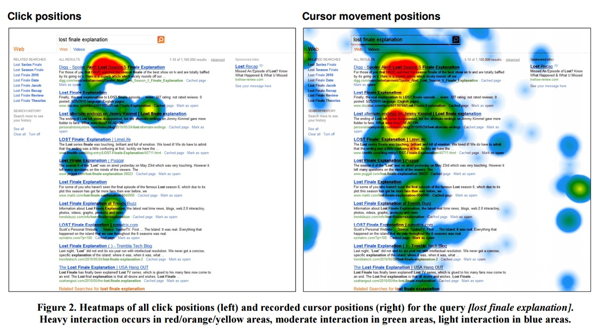
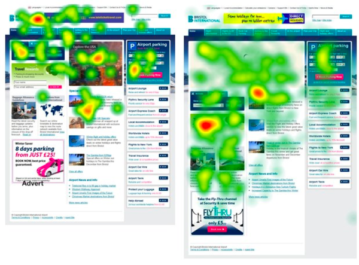

Visual Perfomance
Perfomance. For what?
Usability
Conversion Rates
SEO
Steve Souders: 14 Rules
1 - Make Fewer HTTP Requests
2 - Use a Content Delivery Network
3 - Add an Expires Header
4 - Gzip Components
5 - Put Stylesheets at the Top
6 - Put Scripts at the Bottom
7 - Avoid CSS Expressions
Steve Souders: 14 Rules
8 - Make JavaScript and CSS External
9 - Reduce DNS Lookups
10 - Minify JavaScript
11 - Avoid Redirects
12 - Remove Duplicate Scripts
13 - Configure ETags
14 - Make AJAX Cacheable
Lets split this rules
Use Cache!
3 - Add an Expires Header
8 - Make JavaScript and CSS External
13 - Configure ETags
14 - Make AJAX Cacheable
Optimize network
1 - Make Fewer HTTP Requests
2 - Use a Content Delivery Network
4 - Gzip Components
9 - Reduce DNS Lookups
11 - Avoid Redirects
Captain evidence
5 - Put Stylesheets at the Top
6 - Put Scripts at the Bottom
7 - Avoid CSS Expressions
10 - Minify JavaScript
10.1 - Compress CSS/HTML/FONTS/IMAGES
12 - Remove Duplicate Scripts
Pagespeed score: 99


Конечно да.
Наш девиз:
"Eсли не можешь изменить ситуацию - измени отношение юзера к ней"
Кейс из реальной жизни:
Главный совет:
Превращайте ожидание юзера из пассивного в активное
Идем дальше: анализ пользовательских действий
Microsoft case: search relevancy
По следам статьи "22 REASONS WHY WEB PUBLISHERS NEED EYE-TRACKING"
Eye tracking: bristol airport
Call to action
Как собирают юзабилити - данные
"Face is looking" phenomenon
Небольшой тест
Пользовательская душа - потемки
Собирайте и анализируйте юзабилити информацию, делайте A/B тесты - и производительноть вашего приложения заметно улучшится.